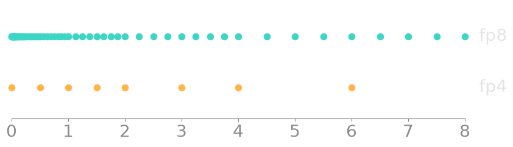
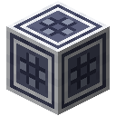

配方
有了模型和学习率，还算不上一次运行。学习率在几千步里怎么走，数舍入到多窄，什么在移动权重，文本怎样切成行，都会改变最后的结果。旧世界关于他们最大那些运行的记述，似乎给这些事留的篇幅和给模型的一样多。
模型核心的「配方」页管着这一切。每个部分要等相应的单元接触核心才开放，可以直接接触，也可以经由训练加速器和其他单元相连；运行用到某个单元时，它会亮起来。制造机用各自规格的光掩模制造它们。
| 单元 | 来自 | 开放 |
|---|---|---|
| 调度器 | 计划 | 计划、预热和长度 |
| bf16 单元 | bf16 | 精度里的 bf16 |
| fp8 单元 | fp8 | 精度里的 fp8 |
| fp4 单元 | fp4 | 精度里的两种 fp4 |
| 正交器 | 正交化 | 优化器里的 Muon |
| 打包器 | 文档掩码 | 打包 |
一个单元都没有时，核心用平常的方式训练：预热 20 步，然后学习率不变，用 fp32 和 AdamW，读文本的窗口。
除非另有说明，下面的数字都来自同一个模型：两个宽度为 32 的 Transformer 块，读整个档案。这么小的模型噪声很大，差几百分之一奈特，可能只是起点不同。
一次运行中的学习率

预热让学习率在最初 W 步里从零升上去，这时权重还是随机的。计划接着让它保持不变，或者从预热结束起沿半条余弦下降，或者先保持、在最后五分之一下降。会下降的计划必须知道终点在哪，所以长度规定一次运行有多少步，走到那一步就自己停下。配方页画出整条曲线，并用一条线标出运行走到了哪里。下面是一次 2,000 步、预热 100 步的运行：灰色是不变，青色是余弦，琥珀色是先保持后下降。

学习率 0.01、1,500 步、预热 100 步时，测试损失分别是：不变 1.56，余弦 1.57，先保持后下降 1.49，各从一个起点开始。
尖峰
尖峰是损失猛地跳到近期平均值之上很远的一步：多出一半，再加十分之一。「训练」页把每个尖峰画成从曲线上竖起的一道红线，「配方」页则统计它们的次数。旁边还显示模型里最大的注意力分数，在这样的学习率下，它会涨过 100,000。
它们出现在远远超过舒适范围的学习率上。下面是学习率 0.3、300 步，各从三个起点开始的结果：
| 预热 | 裁剪 | 尖峰 | 最高损失 | 最好的测试损失 | 最后的测试损失 |
|---|---|---|---|---|---|
| 无 | 关 | 1, 1, 0 | 9.3 | 2.94 | 2.95 |
| 无 | 1 | 0, 1, 0 | 11.4 | 3.01 | 3.01 |
| 100 | 关 | 12, 27, 5 | 17.5 | 2.45 | 3.05 |
| 100 | 1 | 1, 0, 0 | 3.9 | 2.45 | 3.02 |
没有预热，最初几步就把这次运行扔到了再也回不来的地方。有了预热，它能走得更远，直到学习率大到它承受不住，然后在一连串尖峰里散架；裁剪几乎能把这些尖峰全部去掉。可是学习率若在每一步都太大，这两样都救不了它。QK 归一化可以：现代块在同样的学习率下，预热 20 步、不裁剪，能到 2.0，一个尖峰都没有。见现代块。
学习率再低一些时，预热比裁剪更要紧。在 0.1、一个起点、500 步之后，没有预热时测试损失是 2.84，最大注意力分数是 245,000；预热 100 步时是 1.90，分数是 245。到了 0.03 和 0.01，预热几乎没有影响（1.80 比 1.79，1.88 比 1.90），而值为 1 的裁剪什么也没有改变，因为梯度从来没有那么长。
精度
浮点数是一张网格：每个 2 的幂次里有若干个等距的数，舍入就是把一个数移到最近的那个上。

| 格式 | 每个权重占 | 每个 2 的幂次里有 | 上限 |
|---|---|---|---|
| fp32 | 4 字节 | 8,388,608 | 3.4 × 10³⁸ |
| bf16 | 2 字节 | 128 | 3.4 × 10³⁸ |
| fp8 | 1 字节 | 8 | 448 |
| fp4 | 半个字节 | 2 | 6 |

fp4 只有八种大小：0、0.5、1、1.5、2、3、4 和 6。范围这么小，就需要一个缩放系数：把张量里最大的数对到网格的顶上，所有数再按同一个系数还原。fp8 这样就够了，只是它的梯度回程时用一张更粗、范围却大得多的网格，上限是 57,344。在 fp4 里，一个特别大的数会把其他数全部送到零。fp4，分块让每 16 个数有自己的缩放系数（用 fp8 保存），让词元表和最后一层留在 fp8，并让梯度随机地向上或向下舍入，这样小梯度不会全部消失。fp4，一个比例是平常的做法。
运行期间权重保持完整，因为比权重间距还小的一步会直接消失。进入每一次矩阵乘法时，权重被舍入，和它相乘的数也被舍入。乘积以 bf16 输出，回程时到达它的梯度也被舍入。舍入没有有用的斜率，所以梯度穿过它时就像它不存在。增益、偏移和温度始终是 bf16。保存下来的模型继续用训练时的格式作答。
舍入对模型自己的数做了什么（运行到第 500 步时）：
| 格式 | 权重移动 | 梯度移动 | 梯度中变成零的数 |
|---|---|---|---|
| bf16 | 0.17% | 0.17% | 没有 |
| fp8 | 2.7% | 5.2% | 没有 |
| fp4，一个比例 | 12% | 18% | 35% |
| fp4，分块 | 9.5% | 13% | 9.3% |
这样做的代价（学习率 0.003，各从一个起点开始）：
| 格式 | 分拣，600 步 | 阅读，1,000 步 | 权重占 |
|---|---|---|---|
| fp32 | 72% | 1.91 | 129 KB |
| bf16 | 76% | 1.91 | 65 KB |
| fp8 | 76% | 1.92 | 32 KB |
| fp4，一个比例 | 33% | 3.78，有 3 个尖峰 | 16 KB |
| fp4，分块 | 69% | 1.98 | 21 KB |
窄格式换来的是空间。智能体或飞行背架能带 160 KB 的权重：用 fp32 是 40,000 个参数，用 fp8 是 160,000 个。两个宽度为 64 的块有 115,161 个参数，用 fp32 太多了。用 fp8 时，智能体可以把它们装在脑中，不需要模型服务器，也不需要中继器。
Muon
AdamW 按每个数自己最近的梯度来缩放它的步长，并不知道它所在的矩阵。Muon 一次移动整个矩阵，沿着动量走，并把每个奇异值都变成 1，这样没有哪个方向比别的方向走得更远。做到这一点不需要把矩阵拆开。先把矩阵缩放到长度为 1（这一步只对不超过大约 1 的奇异值成立），再做五次下面这一步，它们就都到了：

然后矩阵移动，其中 μ = 0.95，λ = 0.01：

只有模型内部的矩阵这样走。词元表、位置表、最后一层和所有向量仍然用 AdamW。
各从一个起点开始：
| 学习率 | 移动方式 | 分拣，600 步 | 阅读，1,000 步 |
|---|---|---|---|
| 0.003 | AdamW | 72% | 1.91 |
| 0.003 | Muon | 76% | 1.84 |
| 0.01 | AdamW | 78% | 1.66 |
| 0.01 | Muon | 87% | 1.58 |
两种方式每一步用的时间差不多。
打包
遗迹里的文本都是一块一块的。碎片丢掉的部分把一条记录切成若干段落，而比 64 个词元短的段落切不出一行，所以平常的窗口根本读不到它们。300 条记录丢掉 30% 的块时，窗口能读到留下文字的 77%；丢掉一半时是 49%；丢掉 70% 时是 21%。配方页的读到的文字会说明数据槽里的东西有多少能读到。
打包把段落一个接一个填进每一行，从一段的结尾到下一段的开头这一步从不计分：一行里 99% 的位置仍然算数。不过注意力还是能看过这些接缝，学到一句话会接上另一句毫不相干的话。打包加掩码让注意力、延迟线和位置都停在每条接缝处，这样一行里没有任何东西能把一个段落和另一个段落连起来读。
300 条记录丢掉 30% 时，学习率 0.003，各从一个起点开始，1,000 步之后的测试损失是：窗口 1.87，打包 1.93，打包加掩码 1.92。四分之三的文本已经读得到，其余的在这么少的步数里添不了多少。100 条记录丢掉 70% 时，窗口只有 8,420 个字符可读，于是把它们背了下来：测试损失降到 2.34，又爬回 2.59。打包的行能到 2.02，加掩码的行是 2.18，因为没有哪一行让它看到很长的回望。掩码换来的，是一个从没跨过接缝学习的模型。
第二个头
把模型最后的线性层换成双词元头，它除了下一个词元，还会学再下一个词元，并把这部分损失的 0.3 加到总损失里。配方页显示它的首选猜对的比例，也就是它能替模型省下一个词元的工夫的比例。
学习率 0.003、1,000 步、一个起点时，它的第一个头测试损失是 1.88，没有第二个头时是 1.91，难分高下。第二个头有 30% 的时候猜对，第一个头 44%。在这么小的模型上，值得要的是第二个头本身，而不是它给第一个头带来的好处。
在 PyTorch 中
torch.optim.lr_scheduler.CosineAnnealingLR(opt, T_max=T - W)torch.nn.utils.clip_grad_norm_(model.parameters(), 1.0)with torch.autocast("cuda", dtype=torch.bfloat16): ...torch.optim.Muon(hidden, lr=lr, momentum=0.95, nesterov=True, adjust_lr_fn="match_rms_adamw")


